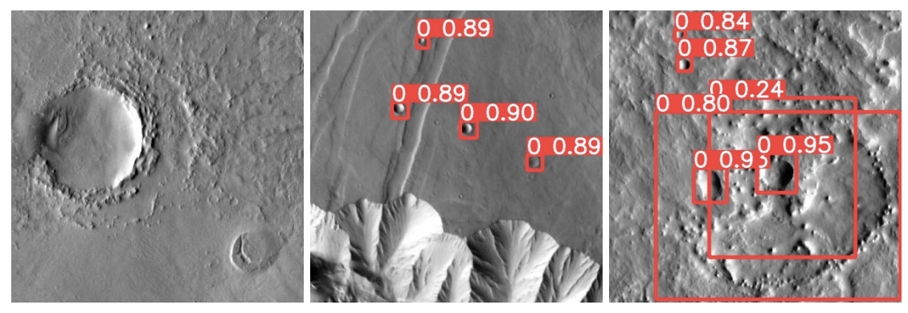
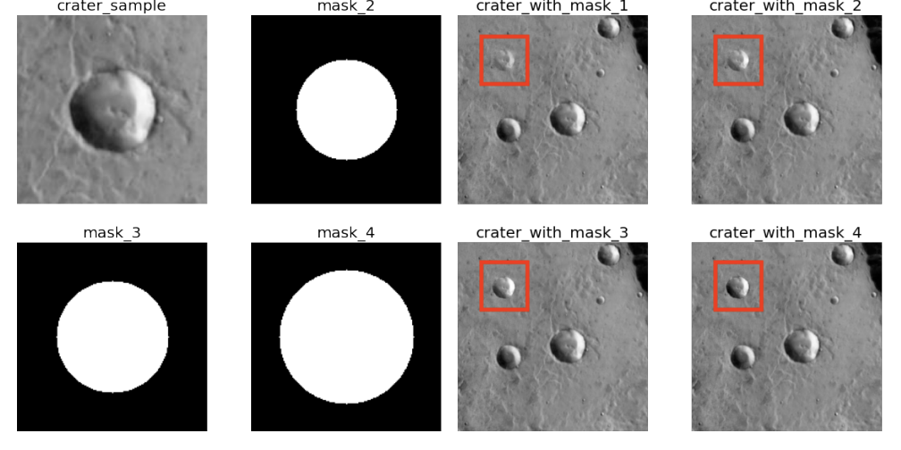
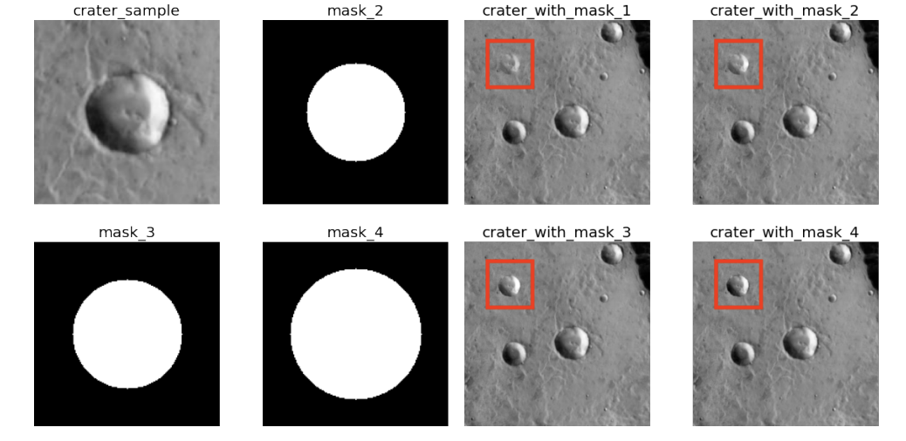
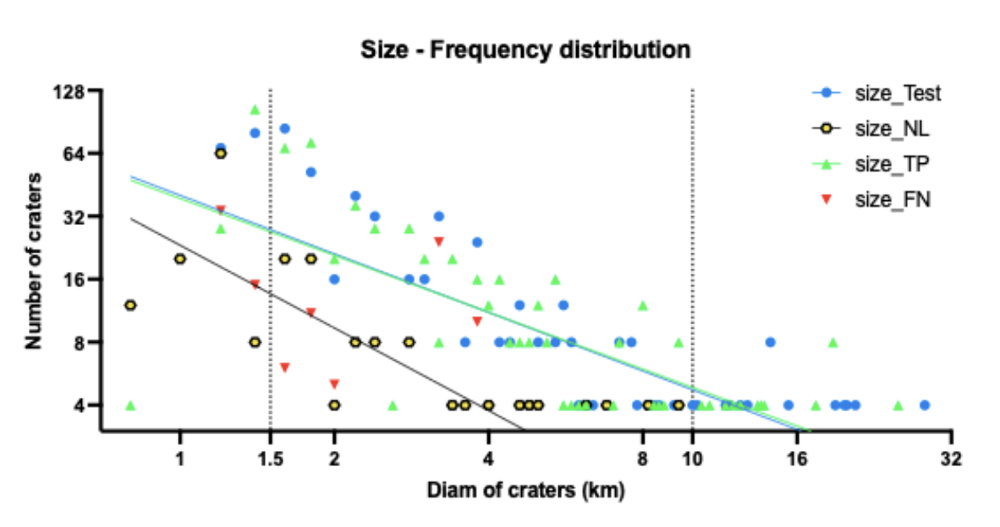
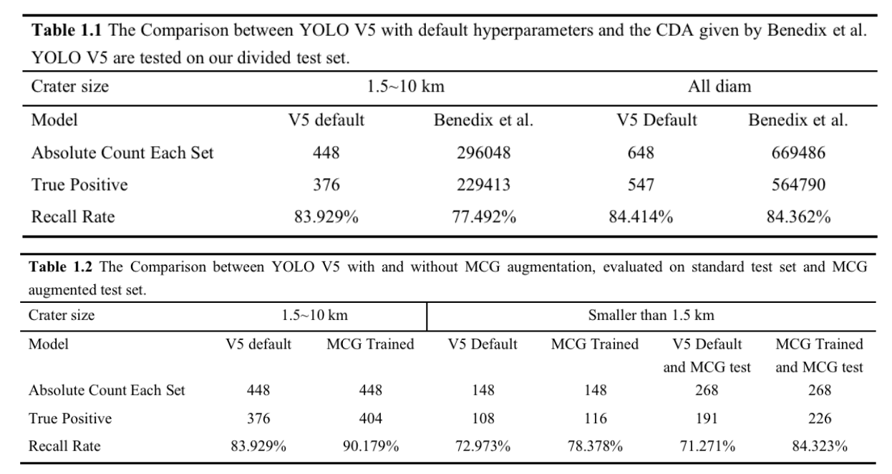

Abstract
 With the promising progress of deep neural networks, object detectors (ODs), like YOLO V5, can
now rapidly process pictures and recognize the contained entities. In a vast scope of the scientific
research field, like planetary science, ODs can be applied to various object counting or classifying
tasks. In particular, crater detection algorithms (CDAs) have helped scientists process thousands
or even millions of pictures and detect millions of craters. The number and sizes of craters contain
rich information. However, like humans, CDAs also make mistakes and produce incorrect results.
In real-world problems, we often fail to train a good model or effectively evaluate the quality of a
model due to imperfect datasets. Iterative training, such as active learning, will cost high labor when
the amount of data is huge, and there will also be problems of error accumulation.
To solve these problems, this paper designs and implements the Metamorphic Crater Generator (MCG), an algorithm
can generate very realistic images of craters with the required size and number. This work also
proposes a CDA test method and a CDA training iteration strategy based on MCG, which realizes
the automated testing and iterative training progress without manually checking. These methods
improved metrics such as mAP 0.5 and recall of the YOLO V5 by about 4%, and even better for
smaller craters (diam < 10km).
Methodology
The Metamorphic Crater Generator (MCG) is made up of the following steps:
1. Crater extraction: Cropping craters from the original image, with their rectangular surroundings.
The size of surroundings are hyperparameters. In our task, I set them as two pixels to ensure
the craters remain the same shape.

2. Crater generation: Resizing the craters into the size we want and pasting them onto the original
background using Poisson fusion. In this process, we need to make circle masks for every
crater we cropped. The size of the Mask depends on the size of resized craters and the shape
of the mask is a circle contained by a square. While pasting our generated craters, I designed
an algorithm (source code can be found in the repository) to ensure they will not overlap with
the original real craters.

3. Generated-crater annotation: Recording the size and location of our generated craters, and
writing them in the format in Table 1 into the txt files which will be our new labels for testing
or training.
Result
1. The MCG can generate craters that look just like the real ones:

2.An improvement can be observed from aug train on both std test and aug test, which is intuitive (This model is better at identifying more craters, in this case, on craters smaller than 1.5 km.)

3. A decrease can be observed when we test our model trained by std train on aug test, the results of recall rate and precision are worse than the model test on std test, which means our test method successfully generates the craters that cannot be detected by models. The performance can be found in table 1.

4. The model trained on aug train performed even better on the aug test, which stands for the model also learned some features of new-generated craters.
Conclusion
In summary, this work makes the following contributions:
• I designed and implemented a Metamorphic Crater Generator(MCG), which can generate
natural-look craters images with customized sizes and locations. I designed a questionnaire and
made survey statistics, which proved that the generated craters are almost indistinguishable
from the naked eye.
• I designed a CDA test method based on MCG, which can test CDAs even with imperfect data
sets. In the data set used in this work. The MCG can effectively generate craters that cannot be
detected by original models and cause a significant gap between models for humans to observe.
• In parallel to the test method, I have proved that MCG can also be used as a data augmentation
method. The recall rate increased by 3% and the mAP 0.5 increased by 2%.
• I proposed and implemented a training-iteration strategy based on MCG, and designed and
implemented an MCG Repalce Edition for this strategy. The training-iteration strategy can
save labor from active learning and also prevent the accumulation of errors. The model trained
under this strategy achieved 7% more recall rate on craters of 1.5 ∼ 10 km diam and 6% more
recall rate on craters smaller than 1.5 km.
• The last but the most significant contribution is that MCG can not only help YOLO V5, but
all CDAs based on machine learning. MCG and the strategies based on it are designed to
be implemented into any data sets of craters. This work’s initial purpose is to eliminate the
problem caused by imperfect data.
During this work, the most challenging task was how to make the generated crater natural. There
were many realistic problems, like how to smooth the edge and avoid overlapping. These problems
always came into a mathematical problem. Luckily, most of them are solved.
The first strength of this work is mentioned before: it eliminated the problem caused by imperfect
training data and test data, which is more suitable for real-life situations. We do not always have
tabular data, the training set is terrible, and we are having problems evaluating our model in these
situations.
The second strength of this work is that it is designed for every object detection model based on
machine learning. So even if there are some newly published models or someone published a set of
great hyper-parameters. We can still implement our method on their model.
Limitation
However, this work and I also have some limitations:
• First of all, the time is relatively tight, and I cannot implement all my ideas. E.g., after I classify
the craters by their size and evaluate the models’ performances on those different groups. I
noticed though the model trained by our Training-Iteration strategy performed great on craters
smaller than 10 km, the recall of larger craters that bigger than 10 km diam is even lower than
the default model. That may be because the model has learned too many generated small
craters. Using MCG to generate some bigger craters randomly may solve this problem but I
don’t have time to finish proving this conjecture. Also, there may be some flaw in the algorithm
looking for the FN and TP cases, because the total number of FN and TP always has a slight
gap from the number of labeled craters in the test set.
• Secondly, in my training-iteration strategy, my method has a potential risk that prevents the
model from learning new features compared with active learning. And if the model continually
learns from the same craters. It may cause the over-fitting issue much sooner than active
learning. An easy way to test if the model is cannot learning from the new feature is to test
our models in a new test set, and analyze the F1 score and recall rate. We can also embed the
result of training sources re-annotated by other models so that we can import more features
into it.
• Thirdly, though the test set I used is totally separated from training sources, I cannot find the
test sources used by Benedix et al., so the comparison between this work and their CDA can
still have possibility to be unfair. However, the model they used is based on YOLO V3, I will
not be surprised if our model performs better than it in the same test set. So I put all the data
and source code of this work in the repository, for further comparison and evaluation.
• Actually the performance of aug train aug test is too good: In the epoch that is given the best
performance, the recall rate is reaching 90% for craters that are smaller than 1.5 km. I think
it is because MCG augmented training has learned some features of MCG fusion. So it can
accurately distinguish the craters generated by MCG.
• Lastly, MCG uses algorithms to avoid overlapping and out of boundaries. However, in real-world
problems, one crater can be overlapped with others or partly out of the image. Optimization
for this situation is also an expectable topic in future work.